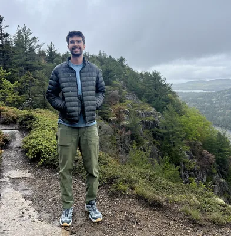
Hi, I'm Sina! I am a first year Ph.D. student at MIT studying Political Science and
Statistics. I am advised by Ariel White and supported
by the institute-wide Presidential Fellowship.
I am interested in studying how computational techniques can be applied to study elections and political communication.
I'm also interested in building new datasets and making existing ones more usable.
For more details on my past work, see Research.
Over the past few years, I:
I do my best work with others and am always looking for new collaborators.
In 2026 I will be presenting at SPSA, ESRA, and POLMETH and attending APSA. I live in Boston and
you can reach me at sinas100 at mit.edu.
In Progress
- Why the Wait? Preprocessing, Mail Ballot Usage, and Vote Reporting Dynamics in the 2020 and 2024 Elections [Working Paper]
Code & Data
- County Level Presidential Election Results [Data]
- Precinct Level Election Results [Data]
- Elections Performance Index [Data] [Explore]
Selected Articles
- 50% of full-time jobs among recent Penn grads are in finance and consulting, DP analysis finds [Read]
- Penn, in Washington: the numbers behind 200 years of alumni, affiliates in Congress [Read]
- Who are Penn's most-cited researchers? Here's what the DP found. [Read]
UPenn
- TA, Introduction to Computer Programming
- Introductory OCaml and Java.
- TA, Data Science for Public Policy
- Graduate course on the R Shiny framework, statistics, and mapping.
- Tutor, Machine Learning for Social Science
- Introduction to supervised and unsupervised learning, deep learning, and natural language processing.
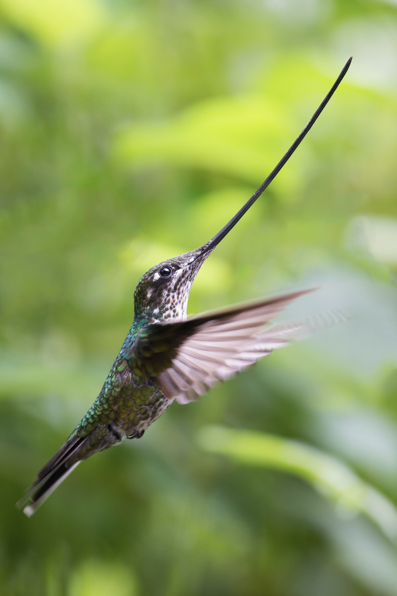
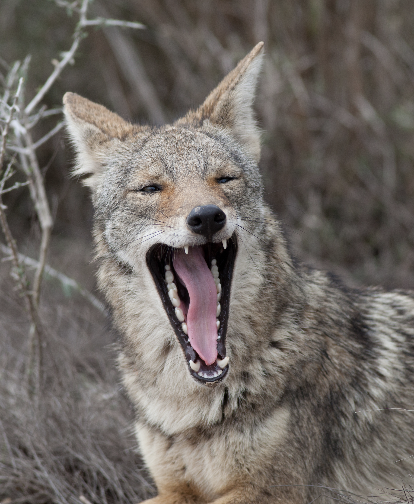
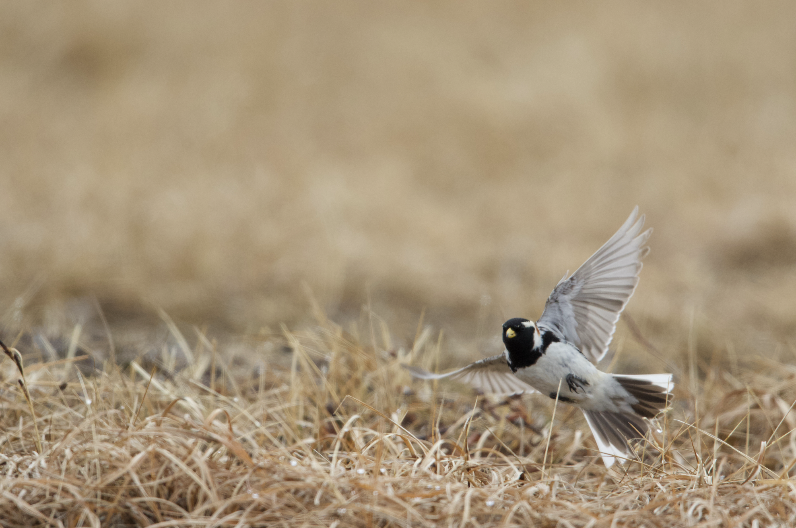
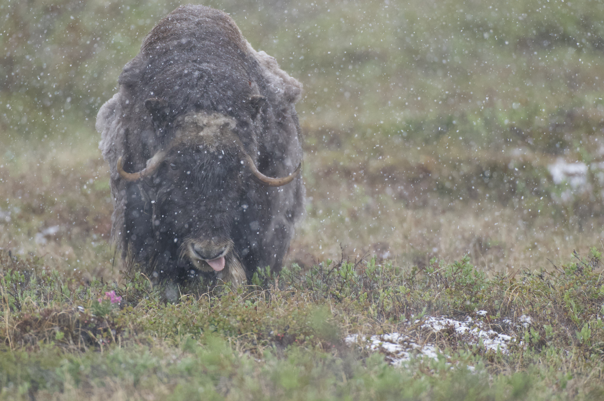
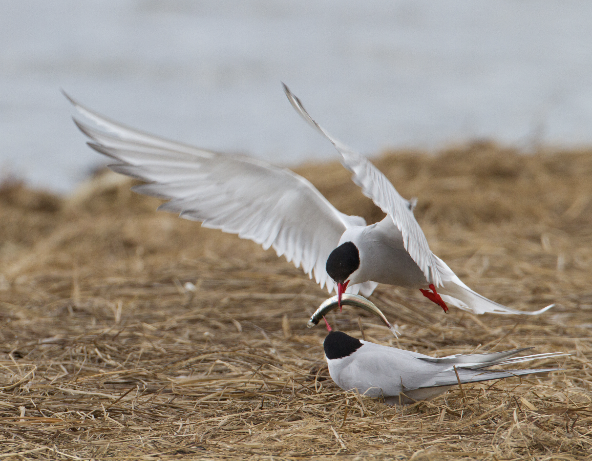
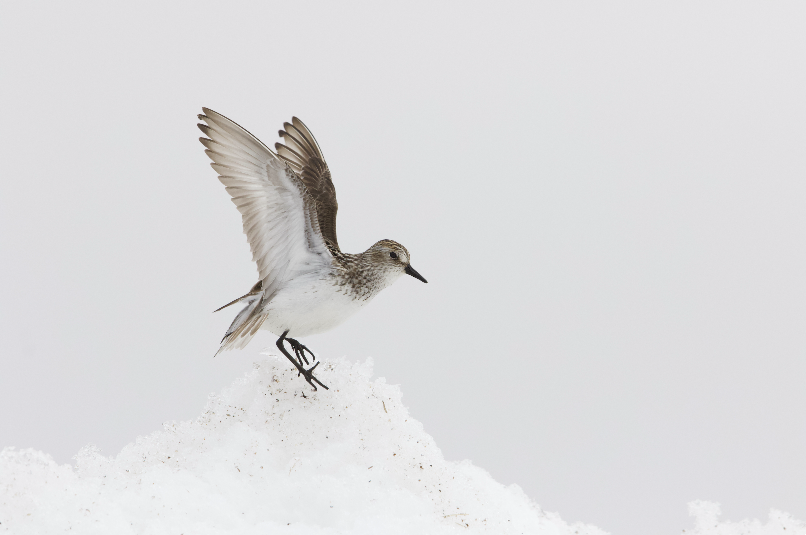
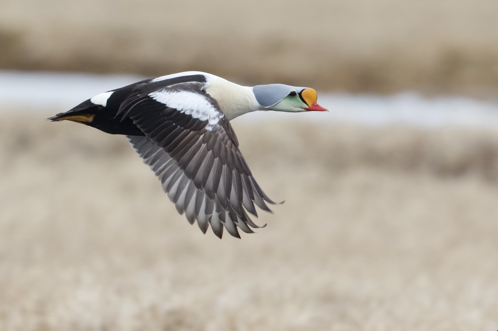
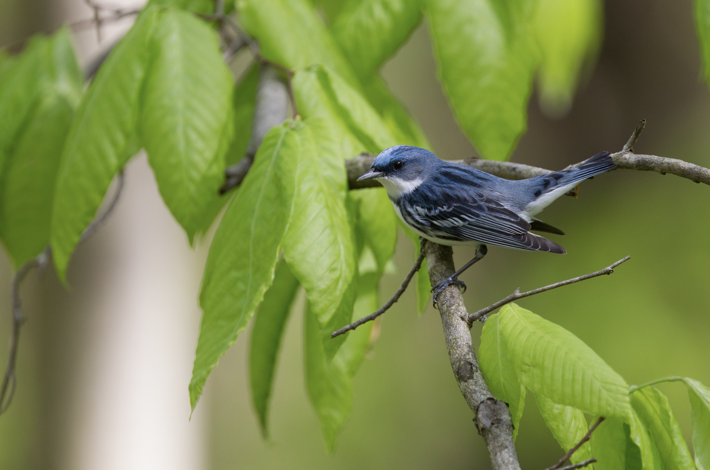
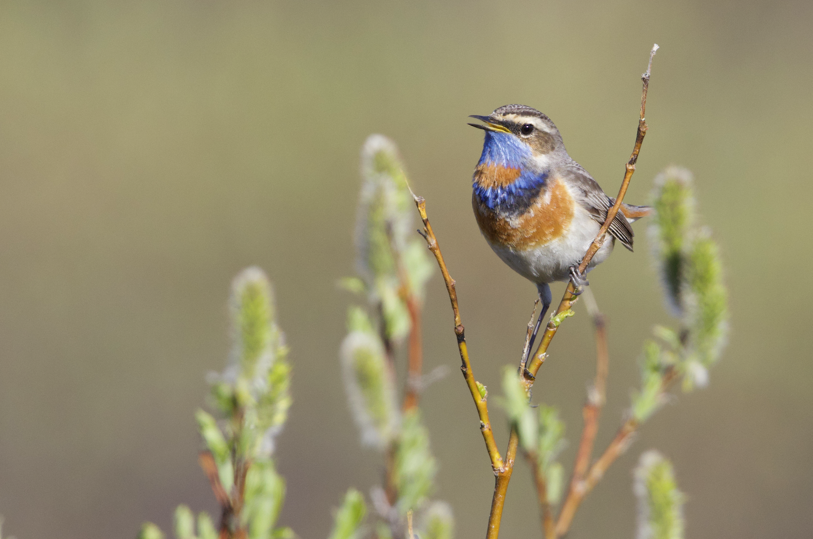
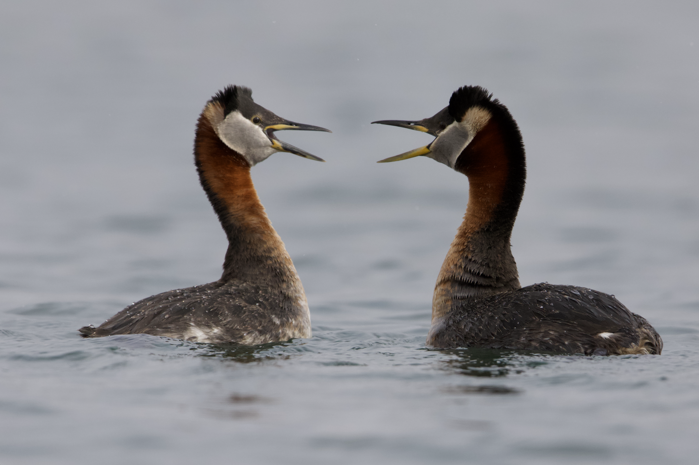
Sword-Billed Hummingbird
1 / 10